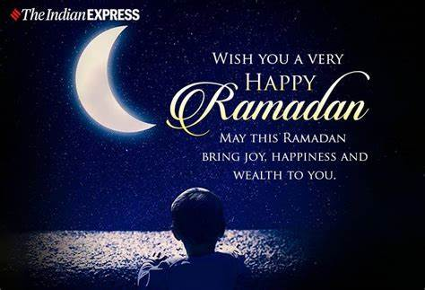

Ramadan Memories
Ramadan 2021 is here!
Day 1 of Ramadan is April 13th, 2021. I ordered some Ramadan decorations and I am looking forward to getting them!
Here is a picture I cherish and a link of the Ramadan Calendar for all to view.

W3C
Ramadan is the holy month where Muslims fast. It is for 30 days, and we fast from sun up to sundown
Here are some of the reasons why we fast
- Ramadan is a month where fasting allows you to take the time to appreciate what you have
- In this holy month you are reminded that there are many in this world who are hungry and go hungry everyday
- Muslims also fast to seek repentanance and take this time to self-reflect
Once the 30 days are complete we celebrate what is known as Eid! Here are some of the things that we do to get ready for Eid!
- We go shopping for new clothes
- The women put on henna the night before
- We clean up the house the night before Eid
- We buy sweets and make breakfast to break our fast with on the morning of Eid!